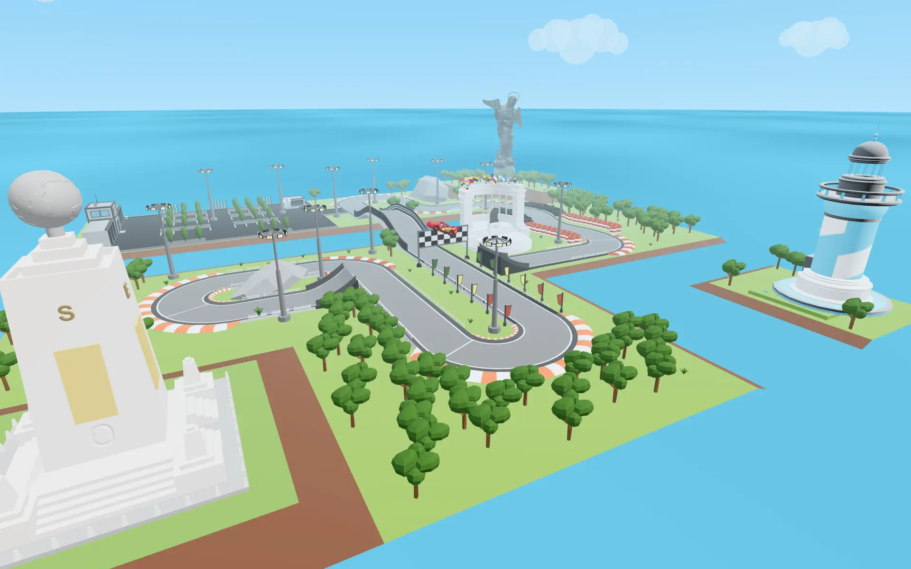
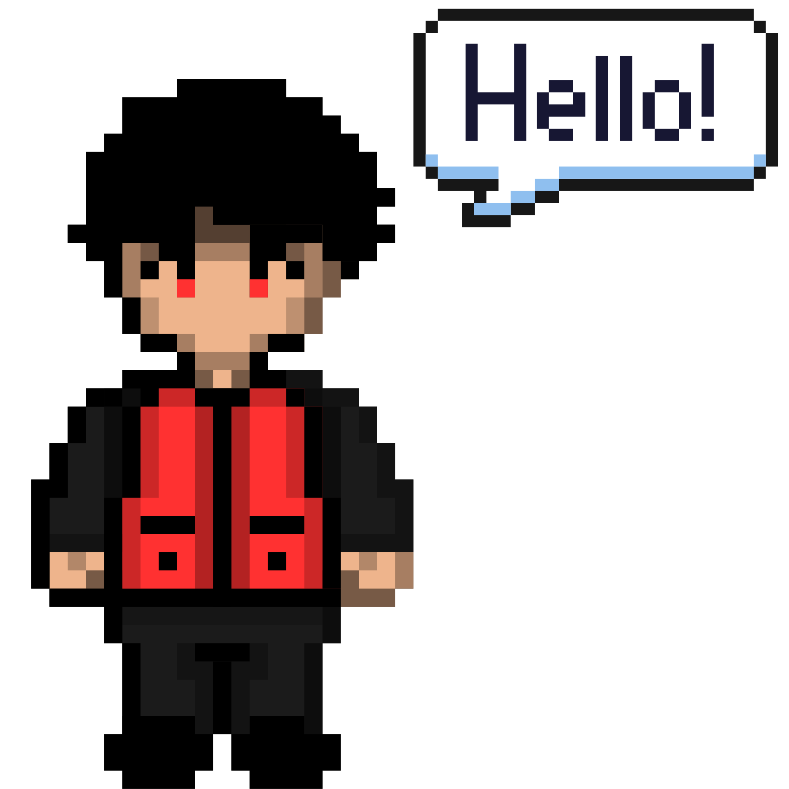
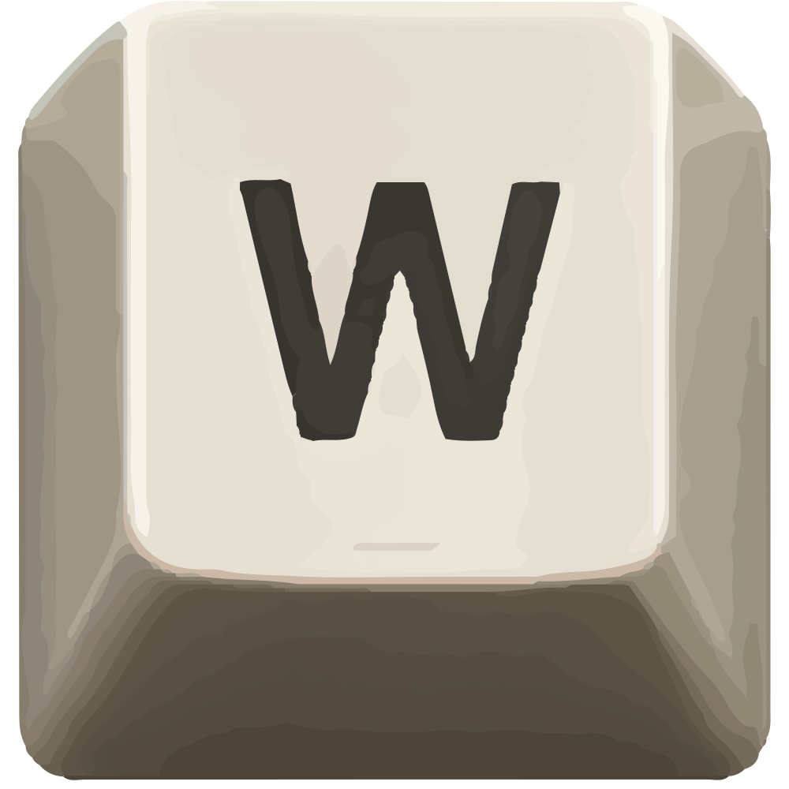
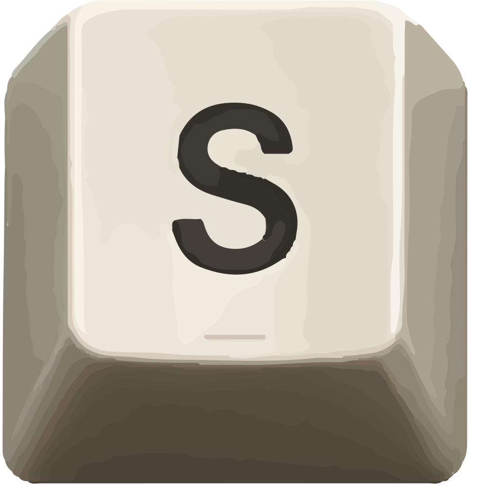

SECTOR 01 // MATHEMATICS & ENDURANCE


While my achievements reflect my past experiences, they often fail to capture the complete narrative. I created this site to express the deeper motivations, curiosity, and purpose that genuinely inspire my work each day.

Drive
Reverse